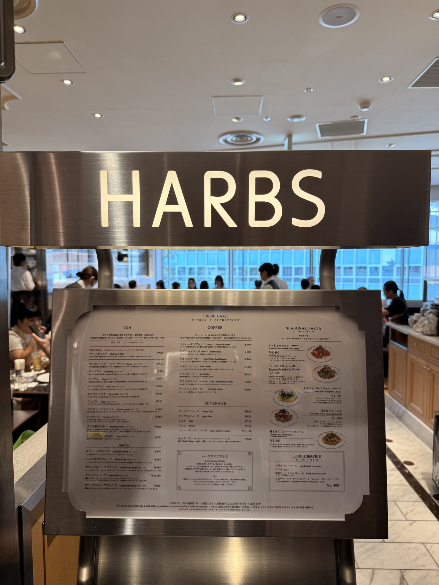
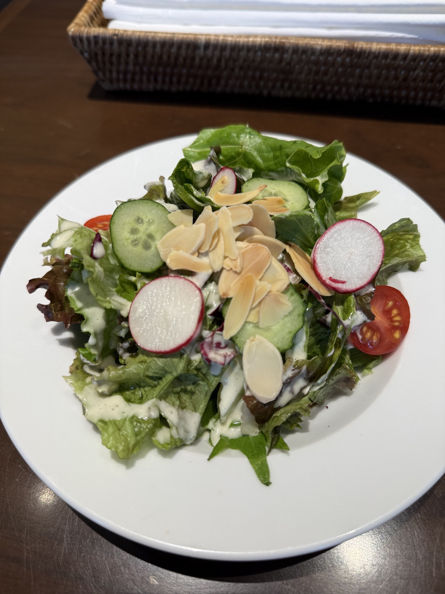
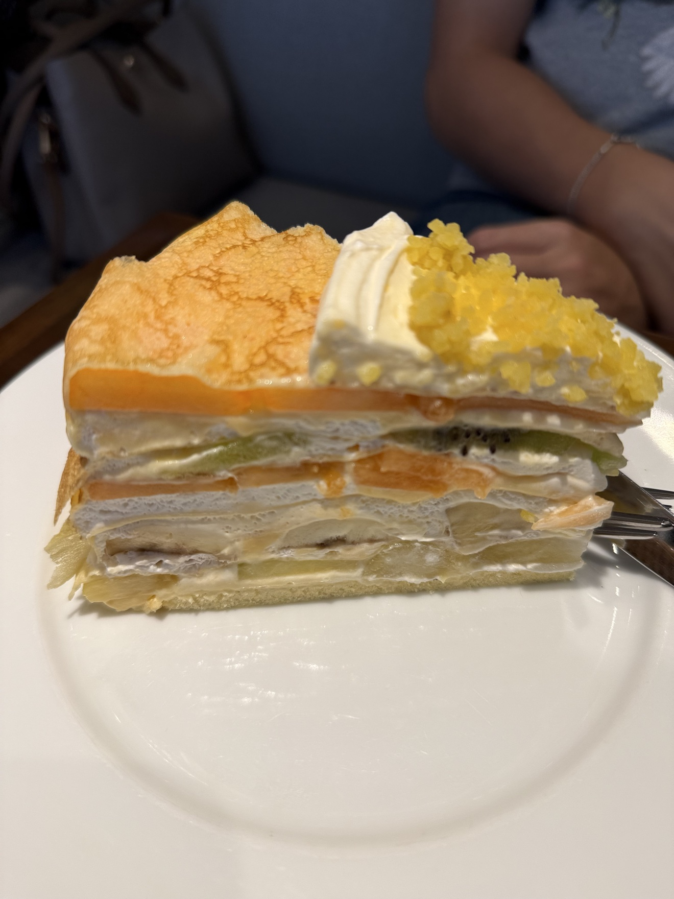
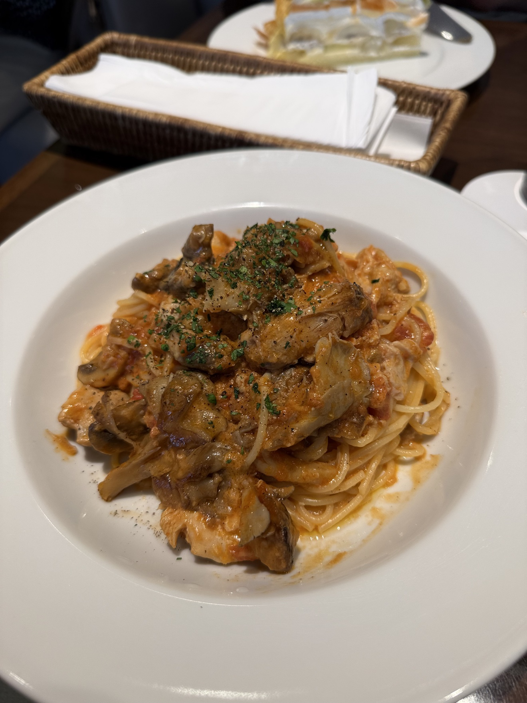
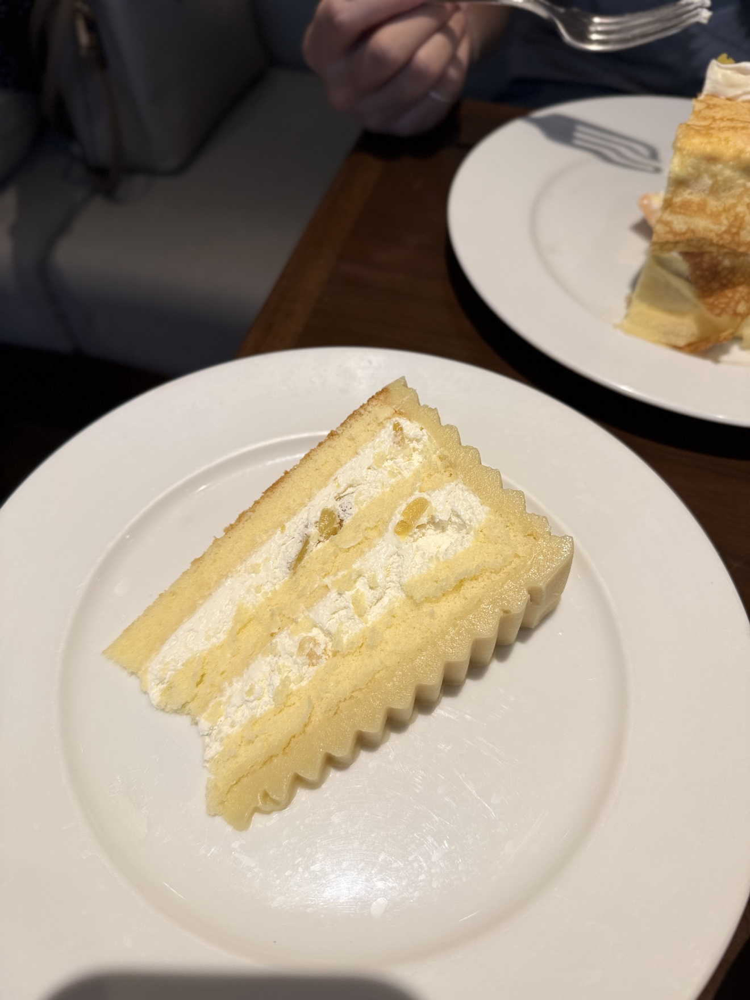
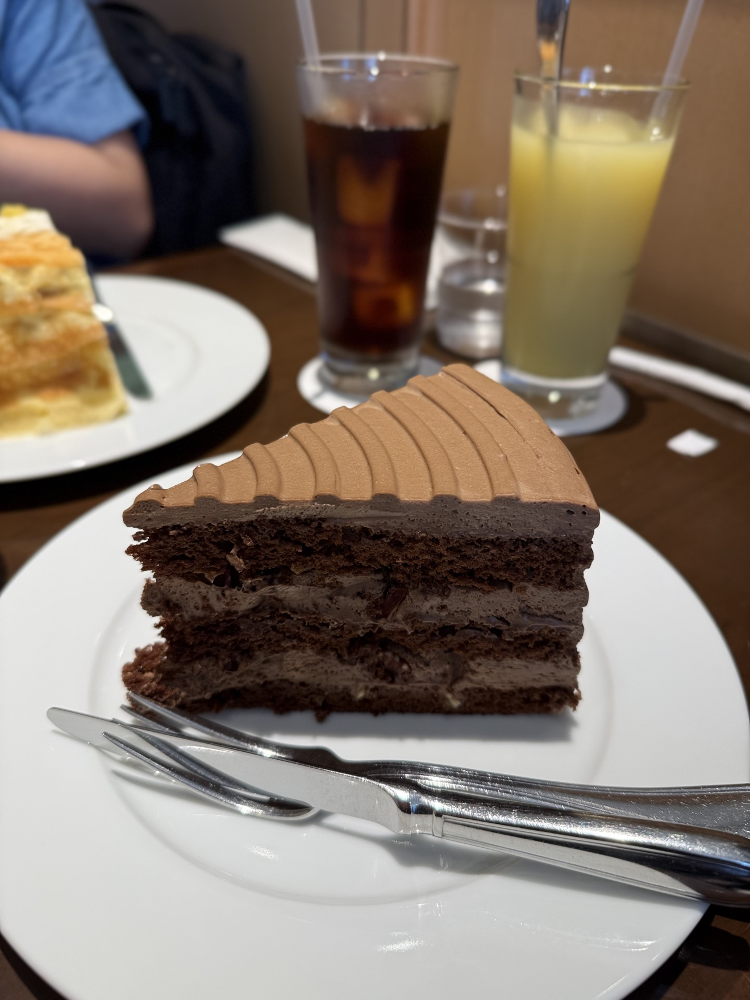

每次去日本，HARBS 是一定要排進去的行程。這次是回家前的最後一餐，想都沒想就走進去了——有些店就是這樣，不需要理由。

水果千層：本命就是本命
薄薄的蛋皮一層層疊起，中間夾滿奇異果、哈密瓜和輕盈鮮奶油。每一口都是水果的清甜，鮮奶油的存在感剛剛好，不搶戲。吃幾次都不膩，這句話對水果千層來說不是客套，是真的。
🍝 蕃茄奶油雞肉蘑菇義大利麵

別以為 HARBS 只有甜點，鹹食也沒在馬虎。醬汁濃郁，緊緊巴著麵條，菇香跟奶香一次滿足。先墊個鹹的，等等蛋糕才能放心吃。
🥗 開胃沙拉

生菜爽脆，杏仁片跟櫻桃蘿蔔是亮點。在一堆濃郁的餐點中間，這盤負責讓味覺重開機。
🍫 巧克力蛋糕

濃郁紮實，巧克力控直接投降。跟水果千層的清爽是兩個極端，建議兩種都點，人生不用二選一。
🍰 栗子蛋糕：完美收尾

綿密輕盈，拿來收尾剛剛好。吃到這裡，這一餐就圓滿了。

一句話總結：去日本不知道吃什麼甜點，就去 HARBS。水果千層點下去，不會錯。
關於這篇文章
備註
本文照片皆為金霸本人實拍。HARBS 為日本連鎖甜點咖啡店，水果千層（ミルクレープ）為招牌品項；各分店品項與營業時間以官方網站公告為準。發布日期：2026 年 10 月 18 日。